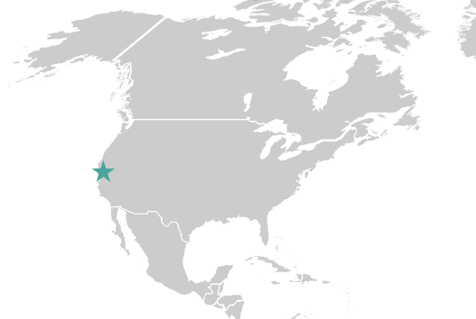

After the HHBA Media Party, all of us Knight-Mozilla fellows stayed in a Buenos Aires for another week, working on side projects and exploring the city together.
I used my "hacking" time to continue working with Snap.svg – my hope was to complete a few more experiments that I could then incorporate into my workshop resources for MozFest.
One experiment was particularly fun to work on: an animated map of travel destinations.
 Please excuse the massive GIF; I don't have a real demo up anywhere yet.
Please excuse the massive GIF; I don't have a real demo up anywhere yet.
I didn't have enough time to finish it (and the animation is quite unrefined at the moment) but it's still sorta fun.
It takes a list of events (with dates and location information), plots them on a map, and animates the travel to-and-from the destination.
So, how exactly does it move a star from one location to the next? I'm so glad you asked.
How to make an SVG star shoot somewhere
This example will illustrate how to create and move a single star. I removed all sequencing functionality for simplicity's sake, so we're just going to look at how to make a star shape fly to New York City from San Francisco.
If you're interested in the whole thing, check out the project on GitHub. Heads up, though – I'm passively working on it, so it'll be in various states of completion.
Step 0: Define your data
You need two data files – one that contains individual event data and looks like something like this:
var data = [
{
"event": "Audio Hackathon",
"location": "New York City",
"startDate": "09-19-2015",
"endDate": "09-20-2015",
"from": "San Francisco",
"to": "Los Angeles"
}
]
and another that contains coordinates for different locations, like this:
var locations = [
{
"location": "Los Angeles",
"x": 140,
"y": 132
},
{
"location": "New York City",
"x": 244,
"y": 114
},
{
"location": "San Francisco",
"x": 135,
"y": 120
}
]
The coordinates themselves are fairly arbitrary for this exercise – they're simply the XY coordinates for each city's location on the SVG file we're using (they're not actual geocoordinates).
{kind=link}
Step 1: Get some location information
As you can see in the events list, each event object includes a field for the primary destination ("location": "New York City") as well as the cities we left ("from": "San Francisco") and return to ("to": "Los Angeles"). So the first thing we want to do is get the coordinates of each of these cities from the locations data (var locations).
var startX, startY, destX, destY, endX, endY;
for (var i=0; i<locations.length; i++){
// look for the entry with a matching starting `location` value
if (locations[i].location == data[0].from){
startX = locations[i].x;
startY = locations[i].y;
}
// look for the entry with a matching destination `location` value
if (locations[i].location == data[0].location){
destX = locations[i].x;
destY = locations[i].y;
}
// look for the entry with a matching ending `location` value
if (locations[i].location == data[0].to){
endX = locations[i].x;
endY = locations[i].y;
}
}
Step 2: Create a pretty star shape
I made a star in Illustrator, saved it as an SVG, and copied the path data into my JS code.
var star = g.path('M 0.000 15.000,L 23.511 32.361,L 14.266 4.635,L 38.042 -12.361,L 8.817 -12.135,L 0.000 -40.000,L -8.817 -12.135,L -38.042 -12.361,L -14.266 4.635,L -23.511 32.361,L 0.000 15.000');
Step 3: Define the star's start position
With Snap.svg, all transformations are represented by a matrix object, which is a collection of parameters that describe the transformation you want to perform on an element. The matrix object can than be further manipulated via methods like clone(), invert(), rotate(), scale(), translate().
var startMatrix = new Snap.Matrix();
startMatrix.translate(startX, startY);
startMatrix.scale(.15, .15);
star.attr({
transform: startMatrix,
class: 'event',
fill: '#00a99d'
});
Here we created a new matrix and then passed the starting X and Y positions to the translate method. We used the scale method to make the star shape a reasonable size.
After the matrix was defined, we declared it as an attribute to the star element.
Step 4: Define the destination and end positions
var destMatrix = new Snap.Matrix(),
endMatrix = new Snap.Matrix();
destMatrix.translate(destX, destY);
destMatrix.scale(.15, .15);
endMatrix.translate(endX, endY);
endMatrix.scale(.15, .15);
Here we defined the Snap matrices for the destination XY coordinates and the end XY coordinates.
Step 5: Animate the matrix transforms
Snap's animation method is pretty straightforward: you pass it the attributes you want to change, the duration of the animation, the type of easing you want, and then a callback function that fires when the animation is complete.
// move star to the destination position
star.animate({
transform: destMatrix
}, 1000, mina.easeinout, function(){
setTimeout(function(){
// move star to the end position
star.animate({
transform: endMatrix
}, 1000, mina.easeinout);
}, 500); //time between ariving and leaving destination
});
Here, the first animation transforms the star from its starting position to its destination position. Once the first animation is complete, we trigger the final animation in the callback function.

Fin
There you have it: a tiny star that starts in one position, flies somewhere else, and ends in a third spot.